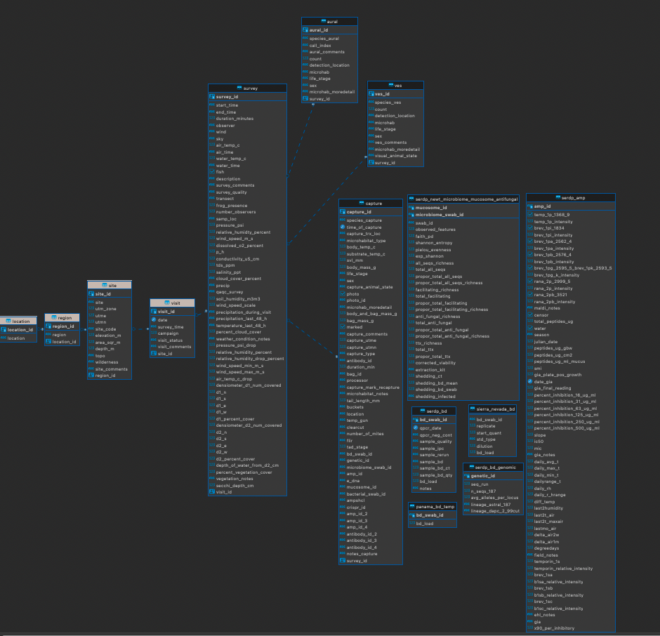

library(RPostgres) # The database driver
library(DBI) # Functions needed to interact with the database
library(rstudioapi) # Package that asked for credentials
# The method below for calling in packages does the same as using `library` but will download any packages that are not initally downloaded. This is a cleaner method and more user friendly for sharing scripts between colleagues
if (!require(librarian)){
install.packages("librarian")
library(librarian)
}
# librarian downloads, if not already downloaded, and reads in needed packages
librarian::shelf(RPostgres, DBI, rstudioapi)RIBBiTR Database Background
Our RIBBITR data is stored in a PostgreSQL database, more commonly called “postgres”. Postgres is a free and open source relational database management system (RDBMS). Postgres RDBMS began development in 1982 at UC Berkeley initially under the name Ingres. After many years of development the project ended and Postgres was released under an MIT License that allowed other developers to utilize the code (open source) and continue developing the code. Following this, many evolution’s of the query language “SQL” occured. By 1997 PostgeSQL was released and SQL was deemed the unifying language for RDBMS style databases. To this day, developers around the world work to build upon the open source software of PostgreSQL and SQL to improve the software. Side note: RDBMS are one “flavor” of databases with new methods for data management systems being developed constantly, like “graph databases”.
Postges is considered a relational database management system (RDBMS) because each observation/row in a table contains a relationship to another observation/row in a different table. By maintaining relationships between data points you ensure the observations in that row will be joined correctly to each table. The rigid structure of the relationship between observations/rows from table to table is maintained through primary keys and foreign keys. A primary key from one table will be joined to the foreign key of the other table in which each row/observation will than align correctly between the two tables.
Non-RDBMS Example
For example, if you did not have a RDBMS and you had a wind_speed table that contains columns for “site”, “date”, and “wind_speed” and a water_temp table containing columns for “site”, “date”, and “water_temp” .
| site | date | wind_speed |
|---|---|---|
| A | 2022-01-03 | 22 |
| B | 2022-08-10 | 24 |
| C | 2022-05-07 | 36 |
| A | 2022-08-12 | 5 |
| C | 2022-09-14 | 12 |
| site | date | water_temp |
|---|---|---|
| A | 2022-01-03 | 3 |
| B | 2022-08-10 | 6 |
| C | 2022-05-07 | 23 |
| A | 2022-08-12 | 18 |
| C | 2022-09-14 | 3 |
Now say you wanted to join those two tables to have one table containing “site”, “date”, “wind_speed”, and “water_temp” you would water_wind <- left_join(water_temp, wind_speed, by = c("site", "date") on the unique relationship of “site” and “date”. Or in human speak, when site and date between the two tables equal each other place the “water_temp” row in the table. With a RDBMS the creation of primary and foreign keys maintains the unique relationship of “site” and “date” between the two tables.
| site | date | water_temp | wind_speed |
|---|---|---|---|
| A | 2022-01-03 | 3 | 22 |
| B | 2022-08-10 | 6 | 24 |
| C | 2022-05-07 | 23 | 36 |
| A | 2022-08-12 | 18 | 5 |
| C | 2022-09-14 | 3 | 12 |
RDMS Example
When looking at the location table and the region table within the survey_data schema in the RIBBiTR database we can see how the RDMS preserves the data and reduces space. We have three unique locations where data can be collected “panama”, “brazil”, and “usa” in which each of those locations can have many regions. For example, “usa” has regions of “california”, “new_mexico”, “vermount”, “tennessee”, “louisiana”, and “pennsylvania”. Through the use of primary and foreign keys we now know how to join those tables. And due to the primary and foreign keys we only need to maintain the unique sites and regions. This saves space by removing repeated values and preserves the data by only having one spelling of “usa”. You could imagine with the above example, if sites had upper case and lower case spellings we could improperly join the data.
Location table
Region table

To join these two table we would join the location table primary key (location_id) to the region table foreign key (location_id). In RStudio, location_region <- left_join(location, region, by = c("location_id")
We can now see the location column populates the correct value where ever the primary key and foreign key equal each other or in other words, the location_id from both tables equal each other.
Now if we zoom out and look at the entire structure of the survey_data schema we can see all the interconnected relationships built between the tables through primary keys and foreign keys. If there is a line connecting the tables we know the same structure follows/trickles through the schema with preserving space and data. Take a look at ribbitr_schema.pdf for more info on each schema.

How to Connect and Interact with the RIBBiTR Data Base
Necessary Library’s
Connecting
To connect to the database you will use dbConnect function from the DBI package. You will need the
database driver:
drv = dbDriver("Postgres"),the database name:
dbname = "ribbitr",the host:
host = "ribbitr.c6p56tuocn5n.us-west-1.rds.amazonaws.com",port:
port = "5432",your username:
user = "<insert_username>"and password:
password = "<insert_password>"
I strongly recommend not storing user and password , or any database info with in your script. A secure method for storing this info is in your .Renviron file that is stored locally on your device and will never be pushed to github. To edit your .Renviron file run this in the console: usethis::edit_r_environ() and the file will open. Populate the file based on the sample below, hit save, and restart your R session. You can then use Sys.getenv() to call on those variables stored locally on your device. Another method is to use the rstudioapi package with the askForPassword() function. Replace Sys.getenv() with askForPassword(). A log in box will appear after running the dbConnect.
Once you have connected to the database it is important to set search_path to the appropriate database schema of interest. This is identical to setting your working directory but for databases. To set search path we will use dbSendQuery in the DBI package. You will tell the dbSendQuery the connection and the SQL statement that points to the schema. Note, you must use single quotes around the schema of choice dbSendQuery(conn = ribbitr_connection, "set search_path = 'survey_data'")
Sample .Renviron file and Database Connection
# 1) run this in the console: "usethis::edit_r_environ()"
# 2) copy the sample below and input your own username and password.
# 3) Save and restart your r sessio. Click "session" at the top and "Restart R".
# sample .Renviron file #
dbname = "ribbitr"
host = "ribbitr.c6p56tuocn5n.us-west-1.rds.amazonaws.com"
port = "5432"
user = "username" # you will input your own username
password = "password" # you will input your own password
# connecting to RIBBiTR Database
ribbitr_connection <- dbConnect(drv = dbDriver("Postgres"),
dbname = "ribbitr",
host = "ribbitr.c6p56tuocn5n.us-west-1.rds.amazonaws.com",
port = "5432",
user = Sys.getenv("aws_user"),
password = Sys.getenv("aws_password"))
# Same method for connecting to RIBBiTR databse but will give feedback, I recommend copying this
tryCatch({
print("Connecting to Database…")
ribbitr_connection <- dbConnect(drv = dbDriver("Postgres"),
dbname = "ribbitr",
host = "ribbitr.c6p56tuocn5n.us-west-1.rds.amazonaws.com",
port = "5432",
user = askForPassword("user"),
password = askForPassword("password"))
print("Database Connected!")
},
error=function(cond) {
print("Unable to connect to Database.")
})
# setting your search path
dbSendQuery(conn = ribbitr_connection,
statement = "set search_path = 'survey_data'")Interacting
Now you should be connected to the ribbitr database with in RStudio and working with in the survey_data schema. Interacting with the database through R will involve learning some SQL. Don’t stress, SQL is a very intuitive and straight forward language. A more thorough SQL tutorial will follow and please do not hesitate to reach out for help with developing queries. I will now show two methods in how one can query the database.
dbQetQuery
Using dbQetQuery in the DBI package we can feed the function our database connection conn = ribbitr_connection and then the SQL statement =. Note, the * symbol in SQL is equivalent as saying “everything” and in R that is .
# location table only
# human speak: "select everthing from the location table"
sql_statement <- "select * from location"
location <- dbGetQuery(conn = ribbitr_connection,
statement = sql_statement)
# location and region table joined
# human speak: "select the location column from the location table and the region column from the region table then join region onto the location when location table location_id equals the region table location_id."
# note, if you want to select specific columns from a table you must start with table alias, that being either "l" for location or "r" for region.
sql_statement <- "select l.location, r.region
from location l
join region r on l.location_id = r.location_id"
location_region <- dbGetQuery(conn = ribbitr_connection,
statement = sql_statement)
# picking columns of interest from each table and join all tables together. Try to always select specific columns of interest from each table.
sql_statement <- "select l.location, r.region, s.site, s.utme, s.utmn, s.utm_zone,
v.date, v.survey_time, su.start_time, su.end_time, su.duration_minutes,
c.species_capture, c.time_of_capture, c.body_temp_c, c.svl_mm, c.sex
from location l
join region r on l.location_id = r.location_id
join site s on r.region_id = s.region_id
join visit v on s.site_id = v.site_id
join survey su on v.visit_id = su.visit_id
join capture c on su.survey_id = c.survey_id;"
capture_data <- dbGetQuery(conn = ribbitr_connection,
statement = sql_statement)Entire SQL Code Chunk
If you are using a Quarto or RMarkdown document with code chunks you can specify in the code chunk that you will be using SQL, the database connection, and what you want the output variable to be.
select *
from locationselect l.location, r.region, s.site, s.utme, s.utmn, s.utm_zone,
v.date, v.survey_time, su.start_time, su.end_time, su.duration_minutes,
c.species_capture, c.time_of_capture, c.body_temp_c, c.svl_mm, c.sex
from location l
join region r on l.location_id = r.location_id
join site s on r.region_id = s.region_id
join visit v on s.site_id = v.site_id
join survey su on v.visit_id = su.visit_id
join capture c on su.survey_id = c.survey_id;